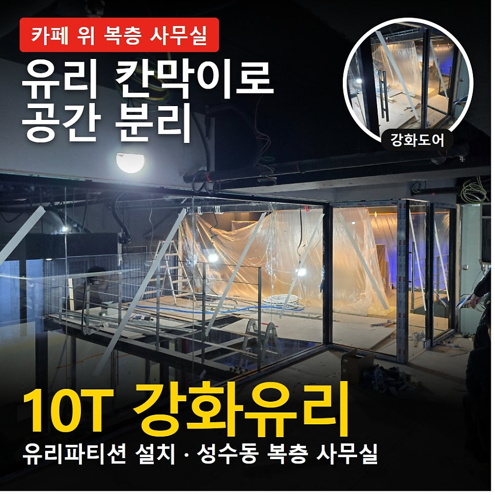
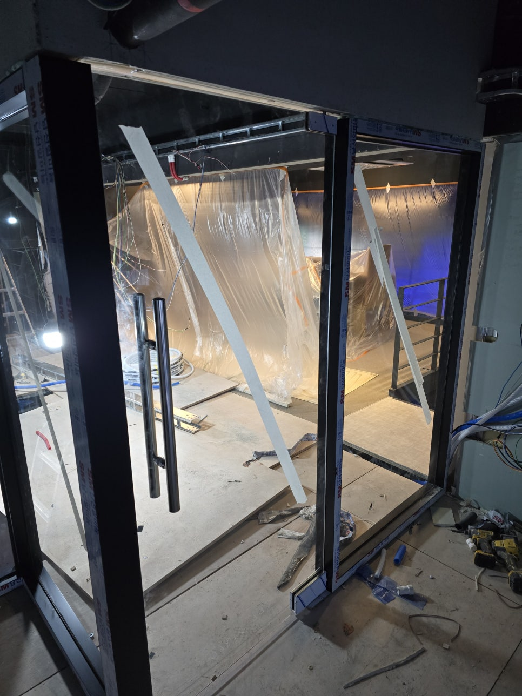
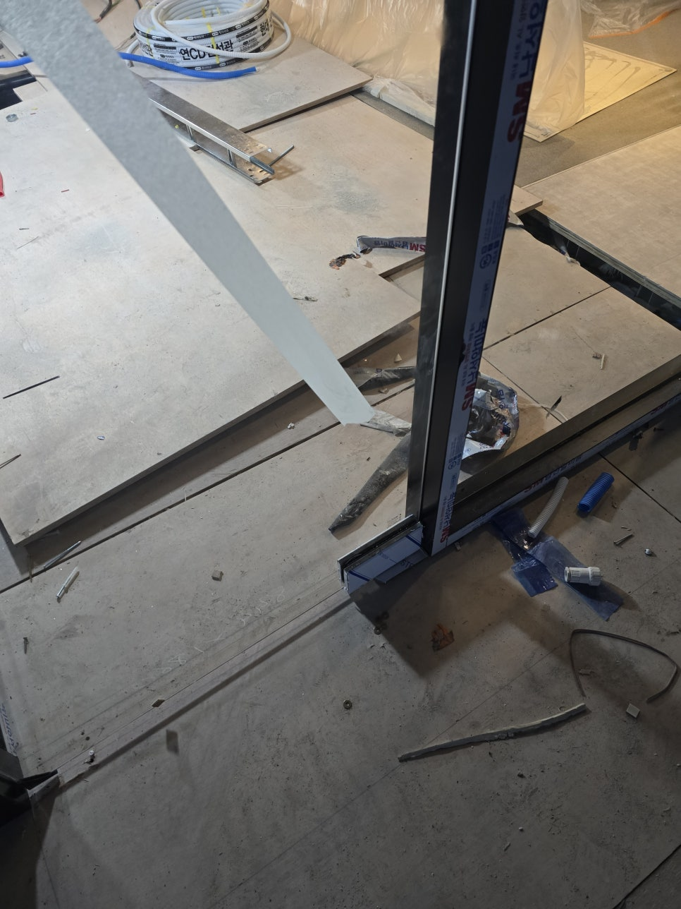

유리가벽은 공간을 나누면서도 시야는 그대로 열어 두는 방법입니다. 서울 성동구의 한 복층 건물은 아래층을 카페로, 위층을 업무 공간으로 쓰는데, 위층 경계를 10T 강화유리(1000×2100) 약 10장으로 세우고 바닥을 파지 않는 문을 달았습니다.
한눈에 보기
| 작업 | 유리가벽(강화유리 칸막이) |
|---|---|
| 지역 | 서울 성동구 성수동 |
| 장소 | 복층 건물 (아래 카페, 위 업무 공간) |
| 유리 | 10T 강화유리 1000×2100 약 10장 |
| 문 | 바닥을 파지 않는 비매립 문 |
| 프레임 | 검은색 프레임 |




이 현장은 완공 사진이 남아 있지 않아 시공 중 사진으로 대신합니다.
복층 공간은 왜 일반 벽 대신 유리가벽을 세우나요?
위층이 아래층으로 트인 구조라 사무실로 쓰려면 경계가 필요했습니다.
벽을 세우면 답답해지고 아래층과 이어진 개방감이 사라지기 때문에, 시야는 그대로 두고 공간만 나누는 유리가벽으로 정했습니다.
유리가벽 시공 순서
- 검은색 프레임을 먼저 잡고 강화유리를 한 장씩 세워 고정했습니다.
- 1000×2100 크기 유리 약 10장을 이어 경계를 만들었습니다.
- 사무실 출입용으로 비매립 문을 달았습니다. 바닥에 장치를 묻지 않는 방식이라 바닥을 파는 공사가 필요 없습니다.
사무실가벽 견적은 어떻게 나오나요?
설치할 가로·세로 미터 수에 따라 금액이 달라져 방문 실측 후 견적을 드립니다.
유리 두께와 문 설치 여부도 함께 확인합니다.
자주 묻는 질문
- Q. 투명칸막이에 출입문도 달 수 있나요?
- 달 수 있습니다. 이 현장은 바닥 공사가 필요 없는 비매립 문을 함께 설치했습니다.
- Q. 유리가벽에는 몇 T 유리를 쓰나요?
- 현장 용도에 맞춰 정하며, 이 현장은 10T 강화유리를 썼습니다.